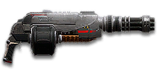

← Back to the T7 Mini-Chaingun comparison
Sage Guide · Terran Republic · Heavy Assault
A 1,000-cert heavy gun for the TR Heavy Assault — a chaingun that starts slow and ends at 845 RPM, with a 125-round magazine behind it. This page teaches you to win fights with it today.
The one-line verdict: a crowd-control hose that wins fights you start on your terms: hold the trigger for a full second and it becomes the fastest-firing infantry gun in the game — but every duel you start cold begins at 750 RPM with a 1.5° aimed cone, so pre-spool, hold, and fight inside 20 metres.

The T7 Mini-Chaingun · Terran Republic · 125-round magazine
Picture the scene, because you've probably lived it: you're sprinting across a courtyard, an enemy appears, and you do everything at once — hold the trigger down while you're still running, then press aim-down-sights (ADS) a split-second later, finger still down. The sight picture snaps in, it looks precise… and your bullets spray everywhere except the man in your crosshair. He kills you. It feels like the game cheated. It didn't — here's what actually happened.
You started firing from a sprint, from the hip. Sprinting is the least accurate state in the game: your cone of fire starts at 5.0° — the widest it can ever be on this gun. Every shot you fire from the hip does not widen it — this gun has zero bloom, so the cone never grows as you fire — but the cone you started with is already wide, and your first shots leave the barrel at just 750 RPM while the gun spools up.
Then you pressed ADS mid-hold — and nothing reset. Aiming down sights does not shrink a cone of fire that is already bloomed. The scope only gives you a precise picture; the bullets keep flying out of the wide cone you built while running and hipfiring. That's the whole mystery: accurate-looking aim, wildly inaccurate gun.
Two timers stack the deck further: your gun needs about 0.3 s to settle after a sprint, and raising the sight itself takes ~0.15 s. Trigger held through all of it means your first half-second of fire is pure confetti.
1 · Feet. Let go of sprint (and the trigger, if you're already holding it). Stop, or drop into a strafe — anything but a full sprint.
2 · Sight. Press ADS and let the sight come up. This takes a heartbeat — your overshield (F) covers it.
3 · Trigger. Now fire. Starting from the aimed cone of 1.5°, your first shots land where the dot points. Keep holding for a full second and the gun reaches its 845 RPM top speed; let go early and the spool resets to 750 RPM instantly. On this gun the third beat is a hold, not a tap.
Stop → aim → fire. If you take one habit from this entire page, take this one. You'll practise exactly this rhythm in the simulator in section 04.
Four beats, left to right — the same mistake the cards above describe, drawn out.
1 · SprintingYour cone starts maxed at 7.0° — the widest it can ever be.
2 · Trigger heldFiring from the hip while running — every shot adds bloom.
3 · ADS, mid-holdThe sight looks precise — but aiming down sights does not reset bloom.
4 · The sprayBullets fly out of the wide cone you built. The enemy walks away.
Same fight, done right. Each beat has a job, and the order is the whole lesson.
1 · StopLet go of sprint (and the trigger). About 0.3 s for the gun to settle.
2 · AimPress ADS and let the sight come up (~0.15 s).
3 · FireNow fire — from the aimed cone. First shots land where the dot points.
The exception — under ~8 m, skip the whole danceHipfire works, no ADS needed, and stopping is optional. Keep moving, strafe, and let the hipfire ring do the work.
Every enemy infantry has 1,000 health (500 shield + 500 health). Your bullet does 143 damage up close, fading to 112 at long range. Headshots count double, leg shots count less (×0.9). That gives you three numbers worth memorising — and one twist that makes this gun special:
| Range | Damage | Head | Chest | Legs | Chest vs shielded Heavy | Best-case TTK (ramp) |
|---|---|---|---|---|---|---|
| Close · 0–10 m | 143 | 4 | 7 | 8 | 11 | 0.47 s |
| Mid · 10–39 m | 143→125 | 4 | 7 → 8 | 8 → 9 | 11 → 12 | 0.47 → 0.54 s |
| Far · 39 m+ | 125→112 | 5 | 9 | 10 | 13 | 0.62 s |
Perfect-accuracy times to kill, ramp-aware: 4 headshots ≈ 0.24 s, 7 chest shots ≈ 0.47 s up close; 8 chest shots ≈ 0.54 s at mid range, 9 ≈ 0.62 s far. With the Ballistic Rapid Refire Toggle the same kills take 0.45 s / 0.53 s / 0.60 s. At the settled 845 RPM the gun puts out 2,014 damage per second up close — but the first second of a hold lands 14 rounds (2,002 damage) instead of 15, because the spool-up eats the opening. A single-refire calculation (71 ms × intervals) would claim 0.43 s for the close kill — 40 ms faster than the ramp really delivers. This guide uses the ramp everywhere; 71 ms is the settled rate, not the fight rate. Magazine: 125 rounds, with 500 in reserve — 17 close kills per magazine.
Full power to 10 m, then a steady slide to minimum at 60 m. There is no ammo attachment to stretch it — this is the whole chart.
Short reload 4.39 s, on empty 5.39 s — the difference is the 1 s chamber time after the last round. With a 125-round magazine you reload rarely, which makes each reload hurt more when it comes: reload early, behind cover, and never on empty. The Extended Magazine (section 06) doubles the belt to 250 rounds, so a careful player can go whole fights without touching the reload key at all.
15 m — your sweet spot: 8 shots, 0.54 s, and the ADS cone is 0.39 m wide — still inside the torso. The first shot leaves at 750 RPM; the first second of the hold lands 14 rounds.
7 shots · 0.47 s ramp TTK · ADS cone 0.26 m wide at 10 m, hipfire 0.44 m. Hipfire or ADS — either hits. Hold the trigger and walk him down; the fight is over before the spool finishes.
8 shots · 0.54 s ramp TTK · ADS cone 0.39 m at 15 m, still inside the torso; hipfire cone 0.65 m at 15 m — wider than the torso, so ADS here. Pre-spool behind the corner, then step out already at full speed.
8–9 shots · 0.54–0.62 s ramp TTK · ADS cone 0.65 m at 25 m, 1.05 m at 40 m. ADS is mandatory; hold in short bursts and re-aim between them. You are still dangerous — but so is everyone else.
9 shots · 0.62 s ramp TTK · ADS cone past 1 m wide at 40 m — wider than the man twice over. You are spraying at a dot. Close in, or pick another fight.
The 1.5° ADS cone is 0.26 m across at 10 m, 0.39 m at 15 m, 0.79 m at 30 m — it passes the torso's ~0.5 m width at about 19 m. Past that, even a perfect cone is wider than your target, and the extra rounds are doing the aiming for you.
Your cone of fire is the spread of your bullets — the full angle of the cone leaving the muzzle. Smaller is tighter. The chaingun's cone is unusually honest: it never grows as you fire, and moving does not widen it. The only thing that changes it is your stance.
| Stance | Cone of fire | Notes |
|---|---|---|
| Standing still, ADS | 1.5° | After ~0.15 s sight-in. Bloom is 0, so the cone never grows. |
| Crouching, ADS | 1.5° | Same cone, lower profile. |
| Strafing, ADS | 1.5° | Moving equals still — strafe freely while holding the trigger. |
| Standing still, hip | 2.5° | 0.35 m across at 8 m. |
| Strafing, hip | 2.5° | Same cone — hipfire does not punish movement either. |
| Sprinting | 5.0° | 0.70 m across at 8 m. Never fire from a sprint. |
| Falling, hip | up to 3.0° | Don't fire in the air. |
Automatic, 750 → 845 RPM. There is no burst mode and no single-shot mode. Your fire discipline is the length of the hold: hold through the spool, release to reset. A tap fires one or two rounds at 750 RPM and resets the spool — the worst of both worlds. If you are going to shoot, commit to at least a full second.
The chaingun has no burst discipline — it has a spool. Hold the trigger and watch the meter: the gun starts at 750 RPM and only reaches 845 RPM after a full second. Short taps never get there. The target is at 15 m, ADS cone 1.5°. Try a tap, then a full hold, and compare.
Hold the trigger to start the spool.
This is the gun's spread, drawn at true scale. The rings are the cone of fire at 8 m, against a torso silhouette. No artist's licence — the diameters come straight from the cone angles in section 04.
At 8 m the ADS ring is a small circle around the torso — a ring, not a dot — because 1.5° is a wide cone for a sighted gun. At 15 m it is 0.39 m across; at 30 m, 0.79 m. The laser sight shrinks the hipfire ring from 0.35 m to 0.23 m.
The gun starts at 750 RPM the moment you pull the trigger and climbs to 845 RPM over one second. The dashed line is the Ballistic Rapid Refire Toggle (section 06): full speed in half a second.
The T7 Mini-Chaingun takes no optics at all — no 1× reflex, no 2×, nothing. What you see is the iron sight: a simple post in a ring, zero magnification. At 15 m the iron post covers roughly the torso; at 30 m it covers the man. There is nothing to buy and nothing to compare — the sight picture is the same at 1,000 certs as it is at 1,100. Spend the certs on the rail instead (section 06).
One rail slot, no optics, no barrel, no ammo — the chaingun's attachment list is short, and every choice on it matters.
There are no optics for this gun. Nothing to buy, nothing to compare — the iron sight in section 05 is the whole sight picture.
| Attachment | Cost | What it does |
|---|---|---|
| Ballistic Rapid Refire Toggle First buy | 100 certs / 49 DBC | Spool-up 50% faster — 1,000 ms → 500 ms. Full speed in half a second. This is the attachment the gun was designed around. |
| Laser Sight | 100 certs | Hipfire cone −33% — 2.5° → 1.675° (0.35 m → 0.23 m at 8 m). For hipfire rooms and point holds. |
| Extended Magazine | 100 certs | Magazine 125 → 250 rounds; equip/unequip +20% (1.1 s → 1.32 s, 0.25 s → 0.30 s). Whole fights without a reload. |
| Darklight Flashlight | 100 certs | Reveals infiltrators in the dark. Situational — take it when the fight is a night base, not as a default. |
| None | Free | Nothing on the rail keeps the gun as-is — fine while you save for the Toggle. |
No barrel attachments exist for this gun, and no ammo attachments exist either. There is no way to stretch the range or change the damage — the chart in section 02 is final.
1,000 certs · the gun, bare
Optic: iron sights · Rail: none
Everything in this guide works with this setup. Buy the gun, learn the spool, add attachments later.
1,100 certs
Optic: iron sights · Rail: Ballistic Rapid Refire Toggle (100)
Full speed in half a second — the gun's one weakness, halved. This is the setup the rest of the guide assumes.
1,100 certs
Optic: iron sights · Rail: Laser Sight (100)
Hipfire rooms and point holds: the hipfire cone shrinks to 1.675°, and you never ADS inside 8 m anyway.
1,100 certs
Optic: iron sights · Rail: Extended Magazine (100)
250 rounds, no reload for whole fights. The spool never resets for a reload, so a long hold stays a long hold.